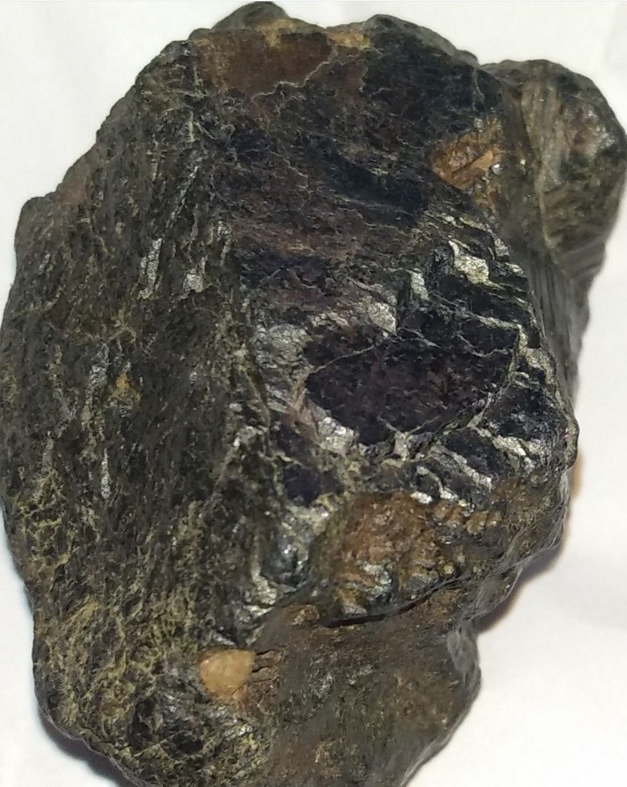

Meteoroids are what we call “space rocks” that range in size from dust grains to small asteroids. This term only applies when they’re in space.
Most are pieces of other, larger bodies that have been broken or blasted off. Some come from comets, others from asteroids, and some even come from the Moon and other planets. Some meteoroids are rocky, while others are metallic, or combinations of rock and metal.
When meteoroids enter Earth's atmosphere, or that of another planet, like Mars, at high speed and burn up, they’re called meteors. This is also when we refer to them as “shooting stars.” Sometimes meteors can even appear brighter than Venus -- that's when we call them “fireballs.” Scientists estimate that about 48.5 tons (44,000 kilograms) of meteoritic material falls on Earth each day.
When a meteoroid survives its trip through the atmosphere and hits the ground, it's called a meteorite.
What Do Materoids Look Like?
Materoids may resemble Earth rocks, but they usually have a burned exterior that can appear shiny. This "fusion crust" forms as the meteorite's outer surface melts while passing through the atmosphere.
There are three major types of Materoids: the "irons," the "stonys," and the stony-irons. Although the majority of Materoids that fall to Earth are stony, most of the Materoids discovered long after they fall are irons.
Irons are heavier and easier to distinguish from Earth rocks than stony Materoids.
How Do We Know Where Materoids Come From?
Most Materoids found on Earth come from shattered asteroids, although some come from Mars or the Moon. In theory, small pieces of Mercury or Venus could have also reached Earth, but none have been conclusively identified.
Scientists can tell where Materoids originate based on several lines of evidence. They can use photographic observations of meteorite falls to calculate orbits and project their paths back to the asteroid belt. They can also compare compositional properties of Materoids to the different classes of asteroids. And they can study how old the Materoids are - up to 4.6 billion years.
Martian rocks can be traced to the Red Planet because they contain pockets of trapped gas that matches what satellites and rovers have found at Mars. Similarly, if the composition of a meteorite resembles rocks that astronauts brought back from the Moon during the Apollo mission, it is likely to be lunar, too.
Finding Materoids
Most space rocks smaller than a football field will break apart in Earth's atmosphere. Traveling at tens of thousands of miles per hour, the object disintegrates as pressure exceeds the strength of the object, resulting a bright flare. Typically less than 5 percent of the original object will ever make it down to the ground. These Materoids, pieces of meteors that are found, typically range between the size of a pebble and a fist.
Don't expect to find Materoids after a meteor shower. Most meteor showers come from comets, whose material is quite fragile. Small comet fragments generally won't survive entry into our atmosphere. In theory, the Taurids and Geminids could send Materoids down to our surface every once in a while, but no remnants have been traced to them definitively.
It can be difficult to distinguish a meteorite from an Earth rock by appearance alone in most parts of the world, but there are some special places where they're much easier to identify: deserts. In sandy deserts with large, open regions of sand and few rocks, dark Materoids stand out clearly. Similarly, Materoids can be much easier to spot in cold, icy deserts, such as the frozen plains of Antarctica.
What Kinds of Materoids Have Been Found?

More than 50,000 Materoids have been found on Earth.
Of these, 99.8 percent come from asteroids. The remaining small fraction (0.2 percent) of Materoids is split roughly equally between Materoids from Mars and the Moon. The over 60 known Martian Materoids were blasted off Mars by meteoroid impacts. All are igneous rocks crystallized from magma. The rocks are very much like Earth rocks with some distinctive compositions that indicate Martian origin.
The nearly 80 lunar Materoids are similar in mineralogy and composition to Apollo mission Moon rocks, but distinct enough to show that they have come from other parts of the Moon. Studies of lunar and Martian Materoids complement studies of Apollo Moon rocks and the robotic exploration of Mars.